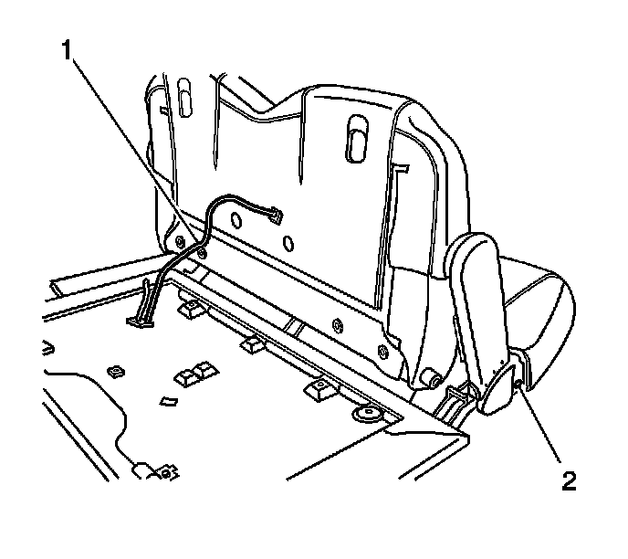

Rear Seat Number 2 Seat Back Presence Sensor Replacement
Rear Seat Number 2 Seat Back Presence Sensor Replacement
Removal Procedure
1. Remove the seat back panel. Refer to Rear Seat Number 2 Back Cushion Panel Replacement (Rear Seat Number 2 Back Cushion Panel Replacement) .

2. Disconnect the electrical connectors (1) from the panel.
3. Remove the fasteners from the seat back presence sensor.
4. Remove the sensor.
Installation Procedure
1. Install the seat back presence sensor to the seat back panel.
Notice: Refer to Fastener Notice (Fastener Notice) .
2. Install the seat back presence sensor bolts to the seat back panel.
Tighten the bolts to 9 N.m (80 lb in).
3. Connect the electrical connectors (1) to the seat back panel.
4. Install the seat back panel. Refer to Rear Seat Number 2 Back Cushion Panel Replacement (Rear Seat Number 2 Back Cushion Panel Replacement) .
5. Calibrate the seat. Refer to Power Folding Seat Calibration (Programming and Relearning) .